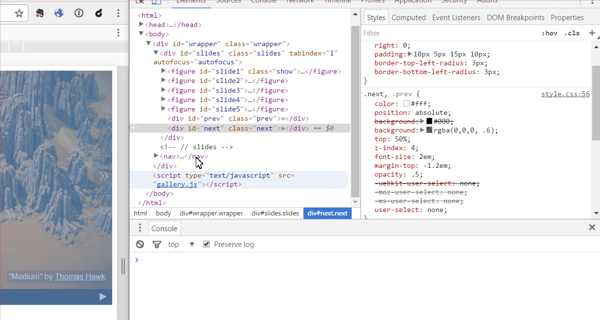

Hi there!
(press space to continue)
Today we are going to learn how to create an interactive image slideshow, using JavaScript.

The structure and the layout (HTML and CSS) are already done.
Our job will be to make it interactive adding JavaScript to it.
By the way, how nice are these slides? :-) If you feel lost anytime on the way, just press ESC to see the preview of all the slides. Do you know that all the animations used in this presentation are coded in JavaScript?
Green is a question to discuss in the groups.
Blue is an important information that will be handy while solving the tasks.
Purple is a task to solve in a team.
Our mentors will be here the whole time and will be happy to answer all the questions.
Also, when clicking the question mark in the top right corner, you will find a glossary with all the important terms used in today's workshop.
Ready? Let's start then!
Working enviroment
- Codesandbox.io - for writing the code. This platform also allows tracking your work progress. To start working with it you need only...
- Internet browser - for sure you have your favourite one. If not, we recommend Chrome. But in all modern browsers you will find...
- Dev tools - you shouldn't want to work without them! Just click F12 (Ctrl + Option + I on Macbooks), to open them.
Sources
You will be working with a copy of this template Codesandbox.io
After cloning it, go to sandbox. In the main catalog, you will find an index.html file. That is the file we will work with.
To show you what the final result is going to be, we prepared a demo showing it.
Open this demo.html the browser.
There are three layers in the final result:
Document structure
What elements you can see on the page?
Images, text, paragraphs, headers, icons, etc.
- all of it is declared with HTML.
Layout
How those elements look like?
Size, shape, color, font, position - that is done with CSS.
User interaction
What is happening on the page?
What are the interactions available for the user? What happens when the user engage with them? - this is what the JavaScript is needed for - and this is what we will be doing today.
Now let's open our index.html in the browser.
What elements you can find in our slideshow gallery? How can we see their properties?
Dev tools!
All modern browsers have built in dev tools. This is a pretty advanced tool that will help us to understand what elements the page is built with and how it works.
Inspect option allows us to see the page implementation details.

Highlighting the elements

Classes, styles and overwriting them
JavaScript console

Time for you to experiment! Using dev tools, try to remove the show class from the element having it and apply it to some other image.
Did you make it? Class show applies some extra CSS styles for its element and that makes that element being displayed in front of others.
If you are still unsure how it works, our mentors will be happy to explain to you with more details.
Now our task will be to use JavaScript code to move this class between elements to make the slideshow change the image automatically.
How does the computer know what to do?
Let's write instructions, steps to take, to show the slide no. 5.
It would go something like this:
1. Find slide no. 5 in the document.
2. Add class `show` to it.To search for elements in the document we will use the document object.
Open dev tools, go to console, write document and see what happens.
document object contains the whole HTML file structure. We can find any document element and change it using this object.
If you are curious how it works - something for you to read later: What is the DOM? - on CSS Tricks
document object gives us many methods for working with the page elements. Time to learn one of them:
querySelector( condition ) - finds and returns you the first element that fulfills the condition.
If you are familiar with CSS - great. CSS selectors work the same way:
// selects the first third level header element
document.querySelector( 'h3' )
// selects the first article
document.querySelector( 'article' )
// selects the first element with the my-class on it
document.querySelector( '.my-class' )
// selects the first element with the id article-1 on it
document.querySelector( '#article-1' ) If you don't know CSS, no worries. In dev tools, in Elements tab, use right click on the mouse on any element and you will find Copy > Copy selector.
Open the console and basing on the examples from the previous slide, write the code to find the slide no. 5 element.
document.querySelector( '#slide5' )The method returned the requested document tree element. Now we need a method to remove or add a CSS class to it.
And for that we will use:
classList.add( class-name )- adds given class,classList.remove( class-name )- removes given class from the element.
Let's write the code to show slide no. 5 in the console - we search for it using the
querySelector,
then we call the classList.add method on it, giving there the class name (in this case it will be
show).
Make sure the cases are okay and put the colon at the end of the instruction.
All done?
document.querySelector( '#slide5' ).classList.add( 'show' );Is it working? Now do the same for the slide no. 4.
document.querySelector( '#slide4' ).classList.add( 'show' );The code for the no. 4 slide did not work, even though it was the same as for the no.5 slide. Can you guess why that happened?
We need to hide no. 5 slide because it overlays the other slides.
Let's write the code to do that.
document.querySelector( '#slide5' ).classList.remove( 'show' );Great! Now let's copy all 3 code snippets to our gallery.js file. We will use them when working on coding the slideshow navigation.
There are 5 white buttons at the bottom. Let's program each of them to show the corresponding slide.
We can take a look at demo.html, to see the result we are aiming for.
Let's think and write down in English the algorithm: when the user clicks the button no. 5 then the slide no. 5 gets displayed in the gallery.
Done?
It would be something like this:
1. Find the button no. 5.
2. Check if it is clicked
3. When it is clicked, do this:
3.1. Hide the slide being displayed now.
3.2. Show the slide no. 5.This time let's start from the end. The last two instructions should be executed together so we need a way to bind them.
We can use a function.
Function groups instructions that need to be executed in a given order to achieve one goal.
In JavaScript there is a few different ways to write a function. One of them is:
function functionName( ) {
/* content - function body */
}Create a function called showSlide5 in the gallery.js file.
Put the code to show slide no. 5 (that we wrote already) in its body.
function showSlide5( ) {
document.querySelector( '#slide5' ).classList.add( 'show' );
}Here is our first function! Now we need to bind it to the button no. 5, so it is being called every time the user clicks on this button.
Do you remember how we were searching for the slide no. 5 or no. 4? How could we now apply it to search for this button?
document.querySelector( '#pin5' )Now we need a method that will fire our function, when user clicks on that element.
All document elements have such method and it is:
addEventListener( event, action-to-perform )- performs the given action, when a particular event happens on an element.
An event could be anything that happens on a page: any user interaction (cliking, hovering mouse cursor over the element, pressing a key, maximizing a window, scroll, etc), or any automatic actions like page loading.
For our button we need a 'click' event - for when an element is being clicked.
In the gallery.js you already have the code for searching for a no. 5 button. Using the
addEventListener method, bind the showSlide5 function to a button 'click' event.
document.querySelector( '#pin5' ).addEventListener( 'click', showSlide5 );What should we do now? Let's refresh the page and see if your code is working okay ;-)
We already have the code to show the slide no. 5. But now, before we show it, we should first hide the slide that is currently being showed.
How can we find that slide? Is there anything specific to it?
Only the currently displayed slide has a show class applied to it.
When we add a dot in front of the class name, we get a selector that we can use to search for that element.
Using what we have learnt so far, at the beggining of the showSlide5 function add a code to find the currently being displayed slide and hide it.
The function now should be:
function showSlide5( ) {
document.querySelector( '.show' ).classList.remove( 'show' );
document.querySelector( '#slide5' ).classList.add( 'show' );
}
document.querySelector( '#pin5' ).addEventListener( 'click', showSlide5 );Is it working? Now we can program the rest of the slides and buttons. The easiest way to achieve that would be copy-paste-change the details :)
Testing time!
What should we test to make sure that everything works fine?
Previous / next navigation
Our next step would be programming the arrows that would take us to the previous or next slide.
Again, let's start with writing down in English what we would need to do to
make the clicking in the >> take us to the right slide.
There is few ways of writing that down. For example:
1. Find the right arrow,
2. Check if it is clicked.
3. When it is clicked, do:
3.1. Find the slide with the `show` class on ot,
3.2. Remove that class from it,
3.3. Add the next element to it,
3.4. Add the class `show` to it.If your instructions are much different from the example above our mentors will be happy to help you with it.
You are already familiar with most of the instructions:
- 1. Find the right arrow,
- 2. Check if it is clicked.
- 3. When it is clicked, do:
-
- 3.1. Find the element with the
showclass on it, - 3.2. Remove that class from it,
- 3.3. Find the next element,
- 3.4. Add the class
showto it.
- 3.1. Find the element with the
Are you unsure about any of the instructions? Now would be the good time to spend some more time with them to make sure you know what is happening.
Using what we have learnt already, add the showNextSlide function in the gallery.js file and add hiding the currently being displayed element in it. Assign this function
to clicking in the right arrow.
An example of the solution:
function showNextSlide( ) {
document.querySelector( '.show' ).classList.remove( 'show' );
// the rest of our code will go here
}
document.querySelector( '#next' ).addEventListener( 'click', showNextSlide );Let's see how it works!
The challenge here is finding the next element to the one that was clicked. Do you have any ideas how to achieve that?
We need to remember, which slide was viewed most recently and then calculate which would be the next one.
Now, to achieve that, we will use variables.
A variable is a storage place where we can store information and then read them in a different place. In JavaScript variables can store anything - text, number, document element, complex object or even a function.
To create a variable in JavaScript we use the keyword let:
//text variable
let courseTitle = 'JavaScript gallery';Once the variable is created we can use it anywhere else in the code with just using its name:
//number variable - the text length
let titleLength = courseTitle.length;As mentioned before, we can store anything in a variable. Let's think for a moment: what format of data should we use to store the information about the currently viewed slide, so that we can easily count which will be the next one?
The easier will be to store the number of the slide. With that we can count the number of the next / previous element by adding or subtracting one.
Let's try to define the algorithm for the right arrow click, so we can read and store the currently being viewed slide number.
It would look something like this:
1. Find the right arrow,
2. Check if it is clicked.
3. When it is clicked then do:
3.1. Find the slide that currently has the `show` class applied,
3.2. Remove that class from it, // no changes so far
3.3. Read the current slide number that is stored in a variable,
3.4. Add `1` to id,
3.5. Find the element with the new number,
3.6. Add `show` class to it.
3.7. Save that new number as the current number.Is everything clear so far? Now would be a good time to clarify things if you feel lost.
Where can we read the current slide number from point 3.3?
We need to save it outside the function, the top of the file will be the best place to do that.
What should be the starting number for it?
When the page is loaded, the first slide is being viewed in the slideshow so the starting number should be 1.
Now that we know what to do, let's try to implement it. At the beginning of the
gallery.js file let's create a variable named currentNumber
and let's assign 1 to it.
let currentNumber = 1;Great, we have our first variable!
Now we want to add 1 to it and store this new value somewhere. We will need another variable to achieve that.
At the end of the showNextSlide function, let's create a new variable, name it newNumber,
and assign a value bigger by 1 from the currentNumber to it.
let newNumber = currentNumber + 1;Very good. Now that we have our new current number, we need to find the element corresponding to that number.
All our slides have an ID as #slide + a number (1, 2, 3, ...).
So now we can use JavaScript's concatenate ability and put the text and the number together with a +, like this:
'#slide' + 1Using this ability, let's write at the end of the showNextSlide function a code
for finding an element with the newNumber and adding a show class to it.
document.querySelector( '#slide' + newNumber ).classList.add( 'show' );Now there is only one thing left - storing the new number as the current one.
At the end of the showNextSlide function let's assign the new number to the currentNumber
(taken from the newNumber).
If everything went according to the plan, our code should look something like:
let currentNumber = 1;
function showNextSlide( ) {
document.querySelector( '.show' ).classList.remove( 'show' );
let newNumber = currentNumber + 1;
document.querySelector( '#slide' + newNumber ).classList.add( 'show' );
currentNumber = newNumber;
}
document.querySelector( '#next' ).addEventListener( 'click', showNextSlide );Is everything ready? Now it's time for testing! :-)
Did you notice? When we reach the end of the slideshow, there is only a black box.
Why is that happening and how we can fix that?
There is only 5 slides, so when we reach the fifth one, the script tries to load slide no. 6 that doesn't exist.
To fix that, we could check what is the new number and if it is bigger than 5 then change it back to 1.
How we could change our algorithm to include that change?
3.1. Find the slide that currently has the `show` class applied,
3.2. Remove that class from it,
3.3. Read the current slide number that is stored in a variable,
3.4. Add `1` to id,
3.5. If the new number is bigger than 5, change it to 1,
3.6. Find the element with the new number,
3.7. Add `show` class to it.
3.8. Save that new number as the current number.For achieving such goals we will be using conditional statements.
Conditional statements are parts of the code which is executed only if a condition is met.
The easiest conditional statement would look like this:
if ( condition ) {
//execute this code.
}To compare which number is bigger or smaller we use >
and <.
Now it is good time to ask questions if anything is not clear.
Let's add a conditional statement in the right place in the showNextSlide function.
It should check if the new number (newNumber) is bigger than 5 and if it is then we should assign 1 to the new number variable.
At this stage our code should look like this:
let currentNumber = 1;
function showNextSlide( ) {
document.querySelector( '.show' ).classList.remove( 'show' );
let newNumber = currentNumber + 1;
if( newNumber > 5 ) {
newNumber = 1;
}
document.querySelector( '#slide' + newNumber ).classList.add( 'show' );
currentNumber = newNumber;
}
document.querySelector( '#next' ).addEventListener( 'click', showNextSlide );Testing time!
If everything is working okay, then we can now handle the left arrow: create a function called showPreviousSlide.
Most of the code we can just copy from the right arrow code, just need to change adding to subtracting
and change the conditional statement.
When we are done with the code, let's don't forget to test it.
An example code for the showPreviousSlide function:
function showPreviousSlide( ) {
document.querySelector( '.show' ).classList.remove( 'show' );
let newNumber = currentNumber - 1;
if( newNumber < 1 ) {
newNumber = 5;
}
document.querySelector( '#slide' + newNumber ).classList.add( 'show' );
currentNumber = newNumber;
}
document.querySelector( '#prev' ).addEventListener( 'click', showPreviousSlide );We did it! We have programmed the basic slideshow behavior.

You want more? There is few bonus challenges for you.
Bonus 1 - putting everything together
We have two ways of navigation already - buttons at the bottom and the arrows. It is time to see how they work together.
If we mix using them then the order of the slides is not quite allright. What exactly is happening? Do you know why is it happening?
The showNextSlide and showPreviousSlide functions read from currentNumber
the number of the current slide and basing on that they calculate what is the next slide.
But the functions assigned to the buttons (showSlide1 ... showSlide5)
they don't update this value so our script has wrong information on which slide is currently being viewed.
Hurray! We got our first side effect ;-) These things happen when you add new functionalities to some old code. To avoid them, we need to test our code and make it as simple as possible.
How can we fix our problem and prevent them for future?
The easiest solution would be to use currentNumber in all functions used by the bottom buttons.
This was each of the functions showSlide1 ... showSlide5 would save
the right number in the range from 1 to 5.
However, this solution has one serious downside. Each time we change something in our code, we will need to check all existing functions and make sure they are still accurate. If not, we will need to fix each of them.
It will be much easier to create one universal function that will show the slide for the given number. With that the logic for showing the slide will always be the same and any possible changes in the future we will have to make only once, in one place.
To achieve that we will use function parameters.
As you remember, a function is a set of instructions that you can invoke from any place in the code so they are executed one by one. If we pass parameters to a function then the same instructions can be executed with different input data.
As an example - a function that takes a name as a parameter and writes in the console greetings for a person with that particular name:
function hi( name ) {
console.log( 'Hi ' + name + '! Nice to see you!' );
}Now we can invoke this function:
hi( 'Magda' );What will hapen if we invoke the hi function like this?
All right, let's go back to our slideshow :-)
Basing on what we have learnt so far, think of what all the functions have in common? Let's write down what such an universal function should do step by step?
1. For a given slide number
1.1. Find the currently being displayed slide element,
1.2. Remove the class `show` from it,
1.3. Find the element with the given number,
1.4. Add a class `show` to it,
1.5. Store the given number as the current slide numberIf anything is not clear, please ask your questions now.
In the gallery.js file add a new function called showSlide.
It should take a number indicating what slide should be displayed (newNumber) as a parameter.
Put all the needed instructions (hiding current slide, finding new slide, showing it, storing new slide number) in the function body.
An example of how it could look like:
function showSlide( newNumber ) {
document.querySelector( '.show' ).classList.remove( 'show' );
document.querySelector( '#slide' + newNumber ).classList.add( 'show' );
currentNumber = newNumber;
}What next? We should modify our already existing functions so they use this universal one.
In the gallery.js file find all the showSlide functions, from showSlide1 to showSlide5.
Replace their body with this new showSlide function invocation and use the proper parameter.
This is the code for the slide no. 1 - others would be analogical:
function showSlide1( ) {
showSlide( 1 );
}
document.querySelector( '#pin1' ).addEventListener( 'click', showSlide1 );Now let's do the same for the arrows functions.
In the gallery.js file find the showPreviousSlide and
showNextSlide functions. Remove from them everything that we already have in the showSlide function.
Invoke the universal function in them - use the proper parameter.
The right arrow code after the changes:
function showNextSlide( ) {
let newNumber = currentNumber + 1;
if( newNumber > 5 ) {
newNumber = 1;
}
showSlide( newNumber );
}
document.querySelector( '#next' ).addEventListener( 'click', showNextSlide );Everything clear? Time for testing!
Good job!

And good news - There is more bonuses!
Bonus 2 - highlighting the button
The next cool thing that we could do is highlightning the button corresponding to the currently being displayed slide.
You can check how it looks like in our demo.
How does this highlightning work? What you can find out in the dev tools?
We see that the currently highlighted button has an additional selected class applied.
Basing on the showSlide, let's add a new function in the gallery.js code.
Let's name it selectPin. It should take a number as a paremeter and, reset the highlight for the currently
highlighted button and highlight the one corresponding to the given number.
Done? Here is an example of how such function could look like:
function selectPin( newNumber ) {
document.querySelector( '.selected' ).classList.remove( 'selected' );
document.querySelector( '#pin' + newNumber ).classList.add( 'selected' );
} Where should that be invoked? Why we don't save the currentNumber value this time?
We want to highlight the button every time we change the slide. So the best place to invoke it
would be inside of the showSlide function.
The number of the highlighted button will always be the same as the number of the viewed slide so we don't have to store the same value again.
Inside of the showSlide function add the button highlightning
- invoke the selectPin function with a proper parameter.
This is our showSlide function now:
function showSlide( newNumber ) {
document.querySelector( '.show' ).classList.remove( 'show' );
document.querySelector( '#slide' + newNumber ).classList.add( 'show' );
currentNumber = newNumber;
selectPin( newNumber );
}And as usually - let's test! :-)
Ooops, something is not right! Do you have any idea what is happening and how to fix it?
The dev tools console might be helpful now. When we click in the file name in the error message we can see what part of our code is the problem:

As we can see the problem is with the classList property. The object that the script is trying to read
this property from does not exist.
Why did this happen? When the page was loaded none of the buttons has the selected
class so searching for such element doesn't return anything.
How can we fix that?
Let's make sure that when the page is loaded we are showing the first slide and the first button is highlighted.
We need to add the code for it somewhere at the beginning of the gallery.js file.
This is the example of the solution:
let currentNumber = 1;
document.querySelector( '#slide' + currentNumber ).classList.add( 'show' );
document.querySelector( '#pin' + currentNumber ).classList.add( 'selected' );How did the tests go now?

We have more challenges for you, but maybe first you would like to take a short break? :-)
Bonus 3 - Loops
Bonus 3 - Loops
Bonus 3 - Loops
Bonus 3 - Loops
What to do to avoid repeating yourself?
There is five snippets in our code that are very similar to each other
function showSlide1 ( ) {
showSlide( 1 );
}
document.querySelector('#pin1').addEventListener( 'click', showSlide1 );function showSlide2 ( ) {
showSlide( 2 );
}
document.querySelector('#pin1').addEventListener( 'click', showSlide2 );...
What would our code look like if the gallery had more than 5 slides?
function showSlide312 ( ) {
showSlide( 312 );
}
document.querySelector('#pin312').addEventListener( 'click', showSlide312 );This must be automated.
After all that is exactly why we use computers - to make our things easier! ;-)
Imagine this:
For every number from 1 to 5 passed as a pinNumber do {
document
.querySelector('#pin' + pinNumber)
.addEventListener( 'click', showSlide(pinNumber) );
}In JavaSkrypt we can wrap long lines of code so they are easier to read.
It is very simple to implement!
We will use a for loop:
for (let pinNumber = 1; pinNumber <= 5; pinNumber++) {
document
.querySelector('#pin' + pinNumber)
.addEventListener( 'click', showSlide(pinNumber) );
}Let's test it!
Hmm there is something wrong :(
We immediately go to the last slide and the pins don't work at all...
Let's take another look at our loop:
for (let pinNumber = 1; pinNumber <= 5; pinNumber++) {
document
.querySelector('#pin' + pinNumber)
.addEventListener( 'click', showSlide(pinNumber) );
}The problem is that the showSlide() function is being invoked when the loop is iterating
instead of when the pin is being clicked
Let's have a look at how our code used to look
function showSlide1 ( ) {
showSlide( 1 );
}
document.querySelector('#pin1').addEventListener( 'click', showSlide1 );The showSlide invocation was in the showSlide1 body and so it was invoked
at the right moment (on the click)
This code:
function showSlide1 ( ) {
showSlide( 1 );
}
document.querySelector('#pin1').addEventListener( 'click', showSlide1 );We could write in a slightly different way:
document.querySelector('#pin1').addEventListener( 'click', function () {
showSlide( 1 );
} );We moved the function definition directly to the place where we want to assign it to the event listener.
And additionally we got rid of its name. Now it is an anonymous function!
Now let's go back to our loop. With what we have just learnt we should be able to correct it
for (let pinNumber = 1; pinNumber <= 5; pinNumber++) {
document
.querySelector('#pin' + pinNumber)
.addEventListener( 'click', function () {
showSlide(pinNumber);
});
}Now let's see how this works
The pins are now working just fine and we have (+-) five times less of the code!

Bonus 4 - Autoplay!
This time let's try to add an autoplay mode to our slideshow.
As always, you can see how it works in our demo when you click the button on the bottom right.
Let's try to think of what is happening with the autoplay mode more general without focusing on details for now.
We can see that the autoplay mode is turning on and off on clicking on the play button - try clicking several times.
How would you write, in general, what is happening here?
We probably ended up with something like:
1. Find the play button,
2. Check if it is clicked.
3. When it is clicked, do:
3.1. Check if the autoplay mode is on:
3.1.1. If yes then turn it off,
3.1.2. If not then turn it on.Ok, so it is time to create this function that will handle our slideshow. How we could check if the automode is currently on?
The same way we use to remember what is the current slide number - using a variable.
In this case our variable will take only two values (on / off), so it will be best to assign it with a logical value
Did you remember that in JavaScript a variable can store practically anything? Among all the other possibilities, we can also assign a logical value (true/false) to it.
True in JavaScript we just code as true,
and for false we just use the keyword false:
let isJavaScriptAwesome = true;
let isJavaScriptComplicated = false;To compare with a logical value we use the triple equals operator:
if ( isJavaScriptAwesome === true ) {
let doWeHaveEnoughYet = false;
}At the beginning of the gallery.js file, create a variable named playing,
that would store the current slideshow mode. At first it should be off so assign false to it.
let playing = false;Great! Now we can start working on our function. Take a quick look at your code to see again how we assign a function with a mouse click on an element.
In the gallery.js file add a new function called playButtonClicked
and assing it to clicking on the play button. In the function body check the current autoplay mode
stored in the playing variable. For now just switch its value (from true to false or from false to true).
We should get something like:
function playButtonClicked( ) {
if ( playing === true ) {
playing = false;
} else {
playing = true;
}
}
document.querySelector( '#play' ).addEventListener( 'click', playButtonClicked );How can we test if our code is working okay?
The easiest way would be to write our variable name in the console - this way we will get its current value.
Now let's take a look at the play button itself. We can see that clicking on it changes its icon. What makes it happen?
Of course it is a CSS class that is causing it. This time the class name is on.
Do you also feel like there is quite a few things we need to handle for this autoplay functionality? How about we split the code into more functions?
Add two more functions in the gallery.js file:
startSlideshow and stopSlideshow. The start function adds the on class
to the play button and stores the current autoplay mode in the playing variable.
The stop function does the opposite.
In the playButtonClicked function we invoke each of them in the proper place.
A lot of new code! Let's see how we did this time:
function playButtonClicked( ) {
if ( playing === true ) {
stopSlideshow();
} else {
startSlideshow();
}
}
document.querySelector( '#play' ).addEventListener( 'click', playButtonClicked );
function startSlideshow( ) {
document.querySelector( '#play' ).classList.add( 'on' );
playing = true;
}
function stopSlideshow( ) {
document.querySelector( '#play' ).classList.remove( 'on' );
playing = false;
}Everything clear so far? If so, then let's test.
If everything is working okay, let's do something more challenging - starting and stopping the slideshow.
How exactly does a slideshow work? How would we write the algorithm for it?
A part of it is already in the startSlideshow function, so we need to now just finish it.
Of course there is few ways to write it down, but the gist would be pretty much the same:
Starting a slideshow function:
1. Add playing class to the play button
2. Save the slideshow status in the playing variable
3. Wait 3 seconds,
4. Change slide to the next one,
5. Go back to point 3.In the next step we would need to track the time some way.
We will use intervals to do that.
An interval repeats the instructions in a given time intervals.
We can create it with this function:
setInterval( action, time span )- repeats the action everytime the given time span (in miliseconds) is up.
In the startSlideshow function let's create an interval that would switch the slides every 3000 miliseconds.
Remember that the function for switching slides we already have done :-)
After adding the new code to it this function would now look like this:
function startSlideshow( ) {
document.querySelector( '#play' ).classList.add( 'on' );
playing = true;
setInterval( showNextSlide, 3000 );
}What can you see in the tests now?
We can see that the slideshow starts and behaves okay. But now we need a way to stop it.
How can we stop an interval?
That was a tricky question. As you already know, the variables in JavaScript can store anything.
What will happen, if we store a setInterval function result in a variable?
We can then use it to stop this interval.
Create a new variable called slideshowInterval somewhere in the beginning of the gallery.js file.
Now store the result of the setInterval function in this variable.
We should now have something like this:
let slideshowInterval;
// (...)
function startSlideshow( ) {
document.querySelector( '#play' ).classList.add( 'on' );
playing = true;
slideshowInterval = setInterval( showNextSlide, 3000 );
}Now we only need to stop the interval.
To achieve that, we will use this function:
clearInterval( interval )- stops the interval stored in the given variable.
Let's try to use it in our code.
In the stopSlideshow function let's stop the started interval.
To do this just invoke the clearInterval function with a proper parameter.
Now the stopSlideshow function looks like this:
function stopSlideshow( ) {
document.querySelector( '#play' ).classList.remove( 'on' );
playing = false;
clearInterval( slideshowInterval );
}How are the tests now?
Congratulations!

This is the end of our workshop. We have done some excellent job but that is only a fraction of what JavaScript is capable of.
We will show you some interesting projects where JavaScript was used.
But now you are probably wondering "What's next?".
Good news: There is plenty of materials to self-learn JavaScript in the Internet
Some ideas on where to start:
- The Modern JavaScript Tutorial
- Try JavaScript on Codeschool
- Learn JavaScript on Codecademy
- How to Learn JavaScript Properly
Follow our Facebook page where we post information about our upcoming courses.
Thank you for spending this time together, see you next time!
 This presentation is on
Creative Commons attribution-noncommercial-sharealike 3.0 Poland license
.
This presentation is on
Creative Commons attribution-noncommercial-sharealike 3.0 Poland license
.